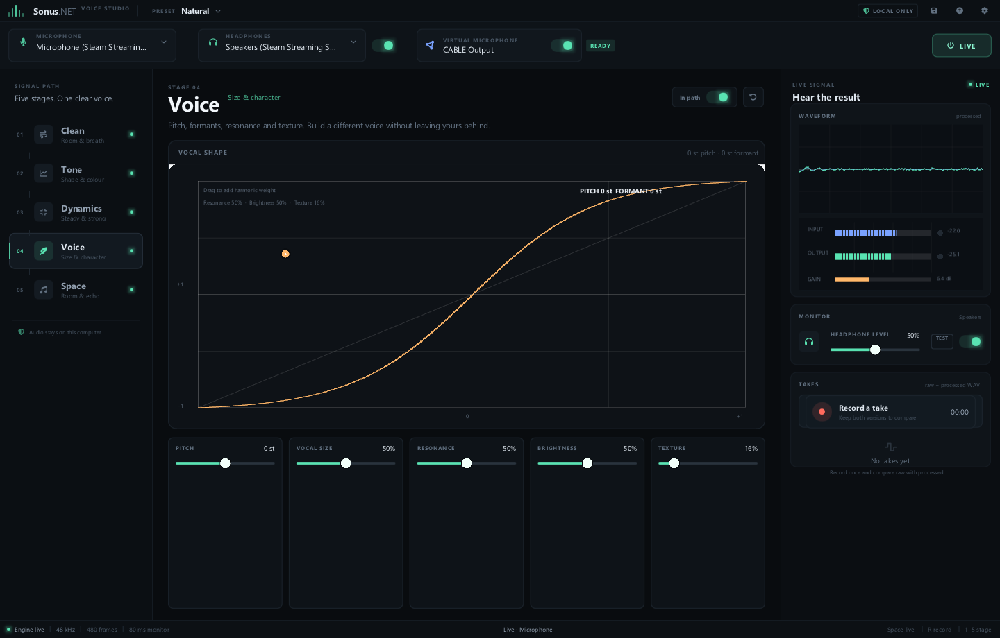
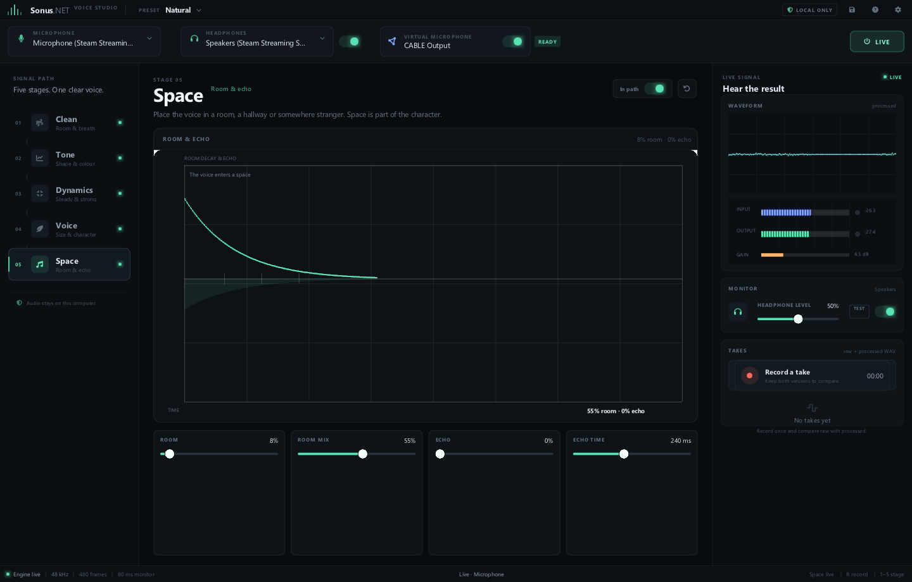
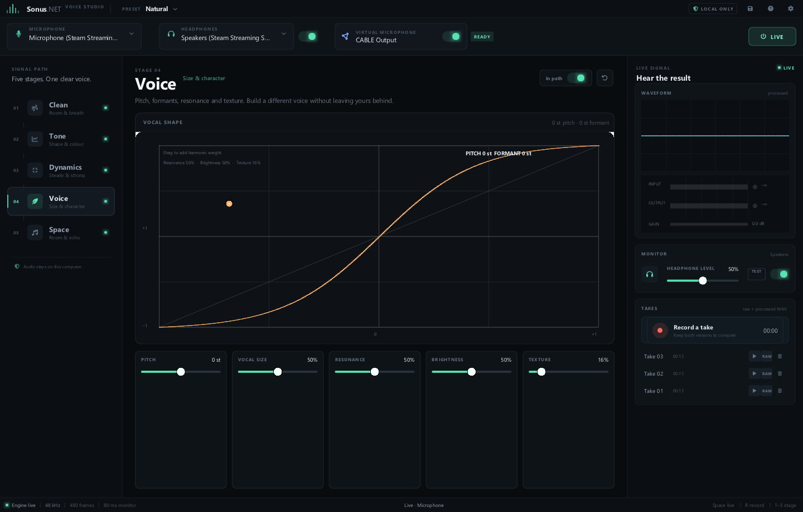

Free voice studio · Windows
Shape the voice. Keep the words.
Sonus listens to your microphone, shapes it through five visual stages, lets you hear the result in headphones, and sends it to any app as a virtual microphone. No account, no cloud, no audio-engineering degree.
Everything runs on your computer. VB-CABLE is only needed for the virtual microphone output.

What do you want to do?
These are the everyday jobs Sonus is built for. Pick one and follow the short guide.
Make my microphone sound clean
Set a noise floor, remove room rumble and even out loud and quiet phrases.
Open the five stages →Build a character voice
Move pitch and formants independently, then add resonance, brightness and texture.
Shape a voice →Use Sonus in Discord or OBS
Install the free VB-CABLE device and choose Sonus as the microphone in another app.
Set up the virtual microphone →Hear myself while I speak
Choose headphones, turn on monitoring and confirm the route with a test chime.
Set up monitoring →Record and compare
Capture raw and processed audio together, then switch between them instantly.
Record a take →Put a character in a room
Use a short room and a controlled echo to place the voice somewhere else.
Open Space →A look around






Five stages, one signal path
Each stage has one job. You can bypass any stage and hear exactly what it contributes.
| Stage | Main purpose | What is inside |
|---|---|---|
| Clean | Remove unwanted sound | Noise gate, gentle expansion, room floor. |
| Tone | Shape frequency and colour | Interactive four-point EQ, low cut, high cut. |
| Dynamics | Keep the voice consistent | Compressor, make-up lift, output limiter. |
| Voice | Change vocal identity | Pitch, formant/vocal size, resonance, brightness, texture. |
| Space | Create an environment | Short room, room mix, echo and echo time. |
Get started in a minute
- Run Sonus. Download a release or run
dotnet runfrom a checkout with the .NET 10 SDK. - Choose devices. Pick your microphone and headphones in the top bar. Use headphones for monitoring to avoid acoustic feedback.
- Start the engine. Press LIVE and speak. The input and output meters should move.
- Hear yourself. Turn on monitoring and press TEST. If the chime is audible, the route is working.
- Shape the sound. Move through Clean, Tone, Dynamics, Voice and Space. Click a stage on the left; the large editor follows.
- Route it onward. Install VB-CABLE once, enable the virtual microphone, then choose CABLE Output in Discord, OBS, Teams or a game.
- Record a comparison. Record a take, then switch between its RAW and PROCESSED versions.
Free, local, and yours
Sonus has no account, subscription, advertising or telemetry. Audio is captured, shaped and written on your computer. Presets and preferences are local JSON files, and recordings are ordinary WAV files you can open anywhere.
No cloud processing
The DSP engine runs locally in real time. The only network action is the optional VB-CABLE download when you ask for it.
Real files
Takes are standard 48 kHz WAV files. Presets are readable JSON. Nothing is locked inside a proprietary project.
Every feature included
All five stages, character presets, monitoring, virtual output and recording are available with no paid tier.
Run from source
You need the .NET 10 SDK on Windows.
dotnet runRun the tests with dotnet test tests/SonarDotNet.Tests/SonarDotNet.Tests.csproj. The desktop host also accepts --screenshot frame.bmp for a headless frame capture.